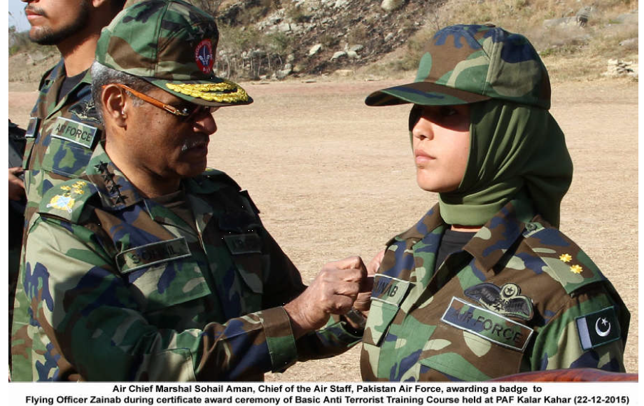
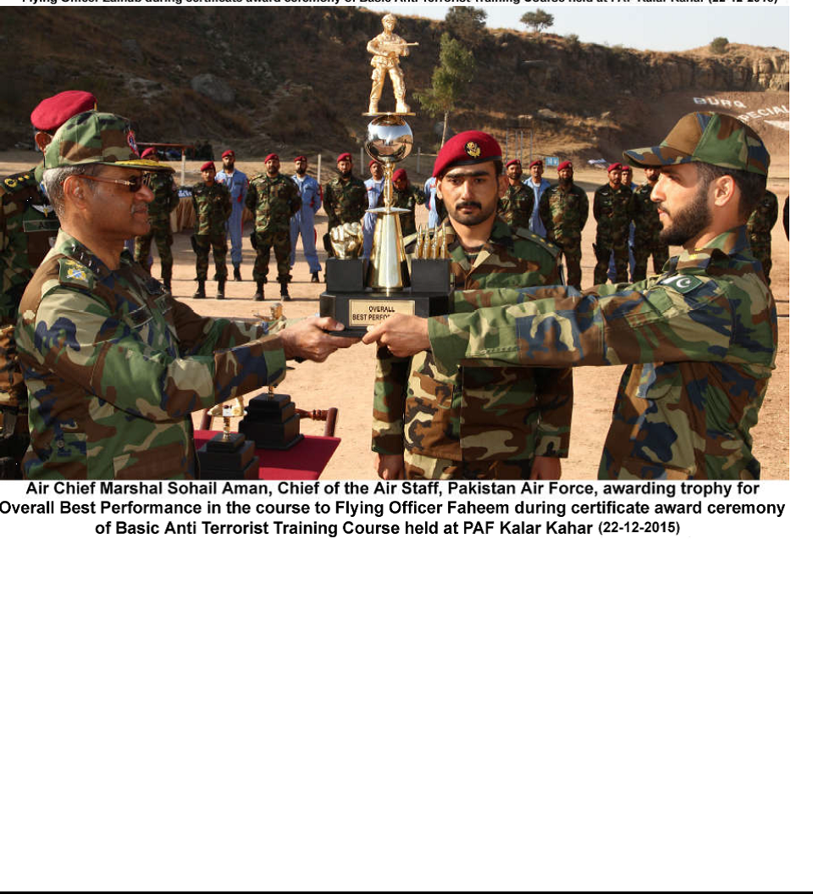
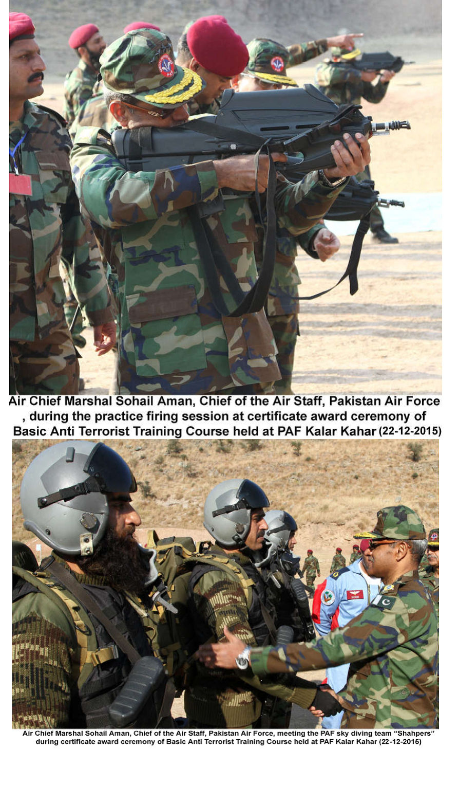

PAF’S BASIC ANTI TERRORIST TRAINING COURSE CONCLUDES
ISLAMABAD 22 DECEMBER, 2015:
PAF’S BASIC ANTI TERRORIST TRAINING COURSE CONCLUDES
ISLAMABAD 22 DECEMBER, 2015: The certificate award ceremony of the Basic
Anti Terrorist Training Course was held at PAF Special Services Wing, Kalar Kahar
today. A total of 226 PAF personnel including 60 Officers and 166 Airmen graduated
in the course. For the first time in the history of Pakistan Air Force, five PAF lady
Officers also completed Basic Anti Terrorist Training Course along with male
counterparts. Air Chief Marshal Sohail Aman, Chief of the Air Staff, Pakistan Air
Force was the Chief Guest at the ceremony. Principal Staff Officers of PAF were
also present at the occasion.
While addressing at the occasion, the Air Chief said, “The level of training
exhibited by you is truly unmatched, and I am sure that with this level of commitment
and dedication no one can dare to harm us. This is our sacred motherland and we
are here to defend it, come what may. We are a peace loving nation and want to live
a peaceful life, but if our adversary wants to fight us we are ready to fight and die for
our country”. He also lauded the performance of PAF lady officers in the course and
said that a nation with such brave daughters fighting shoulder to shoulder with men
cannot be defeated. On this historic occasion, the Air Chief also announced to raise
the status of Kalar Kahar to the level of a PAF Base.
The Chief Guest awarded certificates and trophies to the graduating
personnel who underwent a strenuous and demanding course. Flying Officer Zainab
won the trophy for best Lady Officer of the Course while Senior Aircraft Man Saqib
was awarded the trophy for best in firing. Flying Officer Faheem clinched the trophy
for Overall Best performance in the course.
The Air Chief himself went to the firing range and fired rounds with
sophisticated weapons. The trainees presented live demonstration both in armed
and unarmed combat situations. They also displayed their sniper shooting skills by
taking out the targets with pin point accuracy. Another important event of the
ceremony was rappelling in which the participants presented a thrilling display of
shooting the targets while coming down from the hills. The event also included a
demonstration based on a live scenario in which Quick Response Force (QRF) was
also employed. Later the trainees demonstrated an attack on a mockup terrorist
hideout and cleared the area swiftly. The ceremony culminated with a breath taking
freefall demonstration by PAF sky diving team “Shahpers”. These daredevils jumped
from a height of 12000 feet and landed at the designated places with pin point
accuracy.